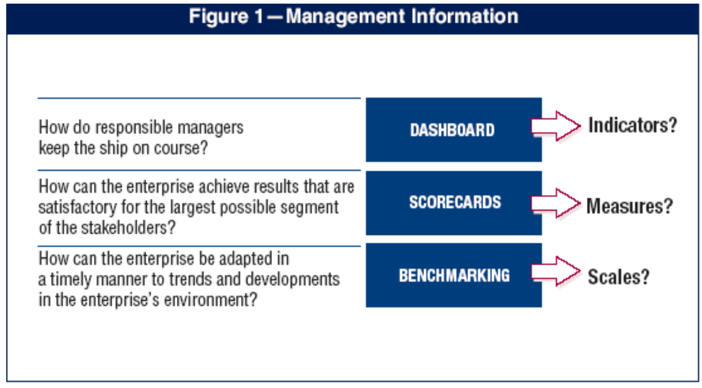

Materi Jurnal | IT Governance Kelompok 3
Perusahaan memerlukan pengukuran yang obyektif tentang di mana mereka berada dan di mana perbaikan diperlukan, dan mereka perlu menerapkan perangkat manajemen untuk memantau peningkatan ini. Gambar diatas menunjukkan beberapa pertanyaan tradisional dan management information tools yang digunakan untuk menemukan jawaban, tetapi Dasborard ini memerlukan Indicators, ScoreCard memerlukan Measure, dan Benchmarking memerlukan Scales untuk perbandingan.
Jawaban atas persyaratan untuk menentukan dan memantau kontrol TI dan tingkat kinerja yang sesuai ini adalah definisi khusus COBIT:
COBIT (Control Objectives for Information and Related Technology) diterima secara global sebagai pekerjaan paling komprehensif untuk tata kelola TI, organisasi, serta proses TI dan manajemen risiko.
COBIT menyediakan praktik yang bagus untuk management dari IT process dalam sebuah manageable dan logical structure, memenuhi berbagai kebutuhan manajemen perusahaan dengan menjembatani gap antara business risks, technical issues, control needs dan performance measurement requirements.
Sumber : PPT Mata Kuliah IT Governance - E-Learning STMIK Antar Bangsa
resume materi
Written by Wini Muthia Kansha - 2110045
Resume Materi 9
- Framework Tata Kelola IT -
Video penjelasan
Quiz Time
Download Materi
Note: Fitur diatas dapat dijumpai pada section terbawah halaman ini
Note: Fitur diatas dapat dijumpai pada section terbawah halaman ini
Manajemen Informasi

Perusahaan memerlukan pengukuran yang obyektif tentang di mana mereka berada dan di mana perbaikan diperlukan, dan mereka perlu menerapkan perangkat manajemen untuk memantau peningkatan ini. Gambar diatas menunjukkan beberapa pertanyaan tradisional dan management information tools yang digunakan untuk menemukan jawaban, tetapi Dasborard ini memerlukan Indicators, ScoreCard memerlukan Measure, dan Benchmarking memerlukan Scales untuk perbandingan.
Jawaban atas persyaratan untuk menentukan dan memantau kontrol TI dan tingkat kinerja yang sesuai ini adalah definisi khusus COBIT:
- Benchmarking kapabilitas proses TI dinyatakan sebagai maturnity model, berasal dari Software Engineering Institute’s Capability Maturity Model
- Goals dan metric proses TI untuk menentukan dan mengukur hasil dan kinerjanya berdasarkan prinsip-prinsip Robert Kaplan dan David Norton’s balanced business scorecard
- Activity goal untuk mengendalikan proses ini, berdasarkan tujuan kontrol terperinci COBIT
Apa itu COBIT?
COBIT (Control Objectives for Information and Related Technology) diterima secara global sebagai pekerjaan paling komprehensif untuk tata kelola TI, organisasi, serta proses TI dan manajemen risiko.
COBIT menyediakan praktik yang bagus untuk management dari IT process dalam sebuah manageable dan logical structure, memenuhi berbagai kebutuhan manajemen perusahaan dengan menjembatani gap antara business risks, technical issues, control needs dan performance measurement requirements.
Kriteria Information Risk?
Peristiwa dapat didefinisikan dalam kaitannya dengan proses, teknologi (sistem), dan organisasi (orang) yang menyusunnya.
-
Message Input:
Event : Business Operations, Business Opportunities, External Requirements dan Regulations - Data : Process, Technology, Organization
-
Service Output:
Risk Criteria : Effectiveness, Efficiency, Confidentiality, Integrity, Availability, Compliance, Reliability
Domain Cobit
- Planning & Organization : Domain ini mencakup strategi dan taktik, dan menyangkut identifikasi cara TI dapat memberikan kontribusi terbaik untuk pencapaian tujuan bisnis.
- Acquisition & Implementation : Untuk mewujudkan strategi TI, solusi TI perlu diidentifikasi, dikembangkan atau diperoleh, serta diimplementasikan dan diintegrasikan ke dalam proses bisnis.
- Delivery & Support : Domain ini berkaitan dengan pengiriman aktual dari layanan yang dibutuhkan, yang berkisar dari operasi tradisional melalui aspek keamanan dan kontinuitas hingga pelatihan.
- Monitoring : Domain ini dengan demikian membahas pengawasan manajemen terhadap proses pengendalian organisasi dan jaminan independen yang diberikan oleh audit internal dan eksternal atau diperoleh dari sumber alternatif.
Sumber : PPT Mata Kuliah IT Governance - E-Learning STMIK Antar Bangsa
Referensi Video Penjelasan :
Quiz time :